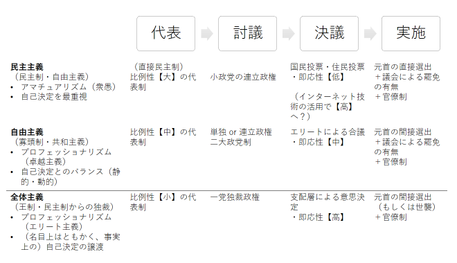

『代議制民主主義 - 「民意」と「政治家」を問い直す』
公開日：
")
代議制民主主義 - 「民意」と「政治家」を問い直す (中公新書)
- 作者: 待鳥聡史
- 出版社/メーカー: 中央公論新社
- 発売日: 2015/11/21
- メディア: 新書
- この商品を含むブログ (20件) を見る
小粒だけどいろいろ役に立つなーと思った。“代表”の話はとても大事なのに、何冊か買ってそのまま積んでたんだけど――この本はいい水先案内人になってくれそう。プレゼント、マジありがとう！
本の内容
代議制を 民主主義 vs 自由主義 の間の緊張と、委任・責任の連鎖（“組織の経済学”みたいな感じやね？）という視点で整理した感じ。
- 第一章 歴史から読み解く――自由主義と民主主義の両輪
- 第二章 課題から読み取る――危機の実態と変革の模索
- 第三章 制度から読み取る――その構造と四類型
- 第四章 将来を読み解く―-改革のゆくえ
という章立ても、多角的で結構わかりやすいと思う。自分なんかはアホだから“代表制”というと“選挙制度”がまっさきに頭に浮かんでそれだけになっちゃうんだけど、執政制度の類型なんかにも触れられていて（そりゃそうだよね！）よかった。
| 選任のルール／解任のルール | 議会による解任が可能 | 原則不可（任期固定） |
| 議会による（間接）選任 | 議院内閣制 | 自律内閣制 |
| 有権者による（直接）選任 | 首相公選制 | 大統領制 |
一般に、大統領制はちょっと強力すぎる。ちゃんと運営できているのはアメリカぐらいで、アメリカの真似をして大統領制を敷いた国では独裁まがいのことが行われている例も少なくない。本家アメリカでも、議会の抑えが効かなかったり、早々に支持を失ってレームダックになったりといろいろ難しいみたいやね。
一方、お馴染みの議院内閣制は不安定で指導力に欠ける。そのため、官僚の裁量が大きくなり、まかせっきりな感じになる。また、間接的に選ばれることから、民意を直接反映したものではないというイメージがある（首相公選制が議論されるわけだね）。でも、委任・責任の連鎖が単線的（有権者→議会→内閣→大臣→担当省庁、アメリカの大統領制は強力な分、複雑な委任・責任の連鎖で縛られている）で、安倍政権みたいな長期安定政権になるとそれなりに強い（何がｗ）。一部の人が「アベ、死ね！」（自民党ではなく！）みたいなことを言うのも、こういう匂いに敏感なのかもねぇ。
ちなみに、両方を掛け合わせた“半大統領制”みたいなのもあるみたいやね（これはこれで委任・責任の連鎖の形態で2つに細分できるそう）。
あとは、経済・社会・文化などによる分断線“クリー ヴィッジ”の概念や、“M+1ルール”、比例性、機械的効果と心理的効果、なんかの概念も有用やな（知ってるのもあったけど）。選挙制度と政党の関係も大事やね。
| - | 小選挙区制 | 大選挙区制 | 比例代表制 |
| 比例性（直接的な民意の反映されやすさ） | 低 | 中 | 高 |
| 凝集性（政党のまとまり） | 低 | 中 | 高 |
つまり、選挙制度や議会制度、執政制度をデザインするっていうのは、「国がどうあるべきか」という話と直結してる。
| 執政制度／選挙制度 | 比例性が高い（民主度【高】） | 比例性が低い（民主度【低】） |
| 分権的（自由度【高】） | ラテンアメリカ諸国 コンセンサス型 |
アメリカ・台湾など 中間型1（アメリカ型共和主義？） |
| 集権的（自由度【低】） | 大陸ヨーロッパ諸国 中間型2（ルソー型共和主義？） |
イギリス、カナダなど 多数主義型（ウェストミンスターモデル） |
民主度・自由度などという誤解を招きやすい言葉を使ったので、コンセンサス型サイコー、多数主義型がクソと思われかねないけど、多数主義型は“賢者型”というか、“多数による専制”を防ぐにはよい（共和主義的・エリート主義的な匂いがつよい）。逆に、コンセンサス型では民主と自由の折り合いがつきにくく、空中分解して（衆愚）独裁に陥ったりするケースが少なくない。どれが優れているか、というより、世界的・歴史的潮流も鑑みながら、どれを選び取るべきかという話だと思う。二院制のデザインについても、自分は少し簡単に考えすぎてたらしく、“気付き（笑）”が多かった。
そしてもう一つ重要なのは、“マルチレヴェルミックス”と本書で呼ばれている、国政＝地方自治の間での捻じれやね。日本は国政で多数主義型を採用している（近年の改革でこの色が強まった）けれど、地方自治においてはコンセンサス型につながりやすい制度設計になっている。こうした捻じれは、地方政治＝国政における政党の一体性を損なう（地域政党が生まれる素地にもなってるよね）。本書ではあまり触れられていなかったけど、地方自治の在り方を考えるうえでも、選挙制度や議会制度、執政制度をどうデザインするかは大切で、難しい話だなーと痛感したし、本書のおかげでモノの見方もちょっと変わりそう。
ここからは本にはあまり関係ない個人的感想
でもさ、民主主義と自由主義の緊張関係ってのはちょっとわかりにくい。自由主義っていう言葉が広すぎてわかりにくい（読むときは 分権的 vs 集権的という軸に読み替えて進んだ）。あと、共和主義が“為政者（≒後世では有権者、市民も含まれる）の徳性を重視する政治姿勢”みたいな感じでとらえられていたのも不満。確かに古典的共和主義においてはそうだけど。分権（≒自由主義）をどのように設計するかは近代共和主義（イギリス、フランス革命、およびアメリカ独立）で重要な視点だし。
そもそもみんな一口に民主主義というけど、真の民主主義者なら“くじ引き（統計学的民主主義）”か“直接民主主義”を主張するだろう。民主主義の要素に“少数意見の尊重”が言われるけど、それと“多数決”との矛盾はどう説明するのか。ポピュリズムと民主主義を都合のいいように使い分けている感じがなんともね。
結局のところ、代議制も少数意見の尊重も、共和体の持続性のための工夫であり、共和主義の範疇のお話だと自分は思っている。つまり、コアは共和主義で、民主主義は専制に陥らない程度に導入するのが望ましいエッセンスに過ぎない（と、同時に基盤でもあるんだけど）。
民主主義者の多く（とくに日本では）は実のところ“民主共和主義者”なのに、民主主義は語っても、共和主義的要素は蔑ろにしがちだと、最後に愚痴が言いたかった。
おまけ
作ってみてあまりうまくないと思ったが、捨てるのももったいないので載せとく。ここにある主義というのは相対的な話で、“べきだ”という話ではない。実際は、歴史的・文化的経緯で自分たちの気象にあったものをつまみ食いしてるわけだけど、いざというときは状況に応じて柔軟な対応ができる体制でないと、いつかは死ぬんだろうなと思う（そういうのを重視する人は、“結局、政治は人の行うこと”なんていうんだろうな）。
